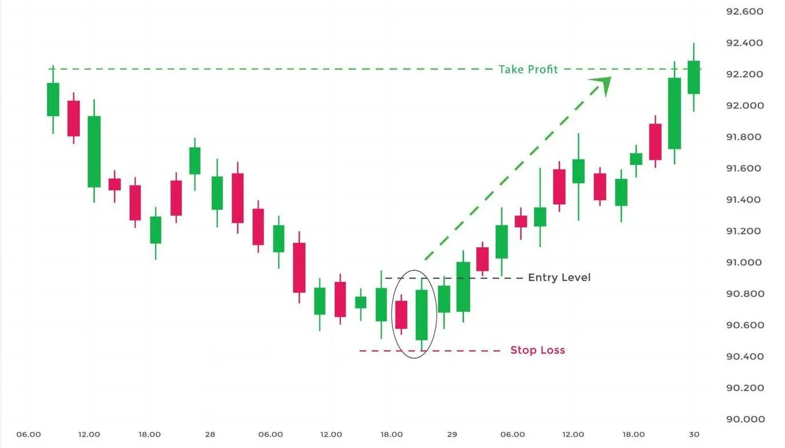

புல்லிஷ் ஏன்கல்பிங் முறைமை ஒரு வணிகப்பட்டியல் முறைமையாகும், இது பங்குச் சந்தையில் கீழ்வழி
பிரதிசேயலை அழித்து மேல் செல்வதை உணர்த்துகின்றது. இந்த முறைமை இரண்டு
மொழுகுகளால் உருவாகின்றது. முதன்முதலான மொழுவு ஒரு நீளமான கீழ்வழி
மொழுவு, இரண்டாம மொழுவு ஒரு சிறிய மேல்வழி
மொழுவு அது முதன்மே தேக்க வர்றீர்கின்றது.
புல்லிஷ் ஏன்கல்பிங் முறைமை ஒரு வலிமையான மேல்சேரலை குறிப்பு செய்கின்றது. ஆனால், இந்
முறைமையை போன்று, பங்குச் சந்தையில் மேல்வாழ்ச்சிக்காக வணிகம் செய்யலாம்.
